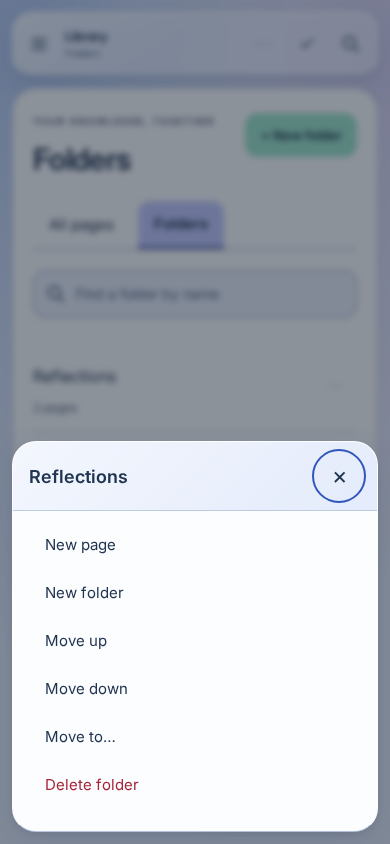
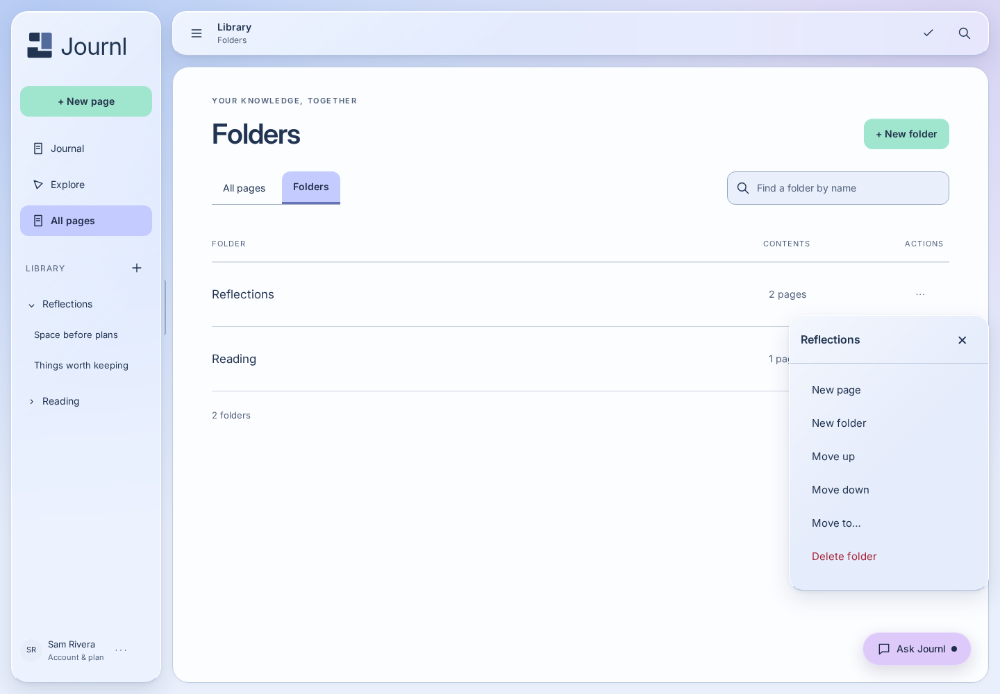
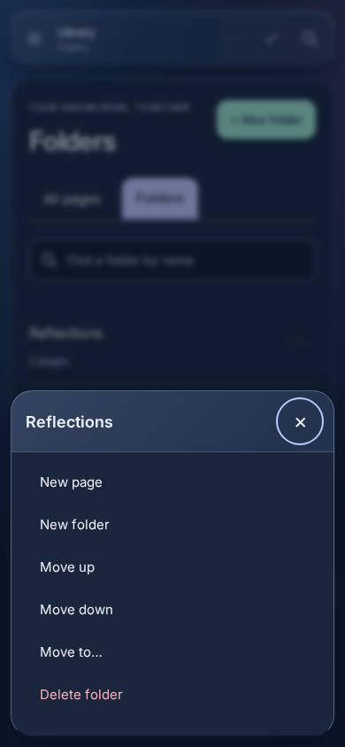
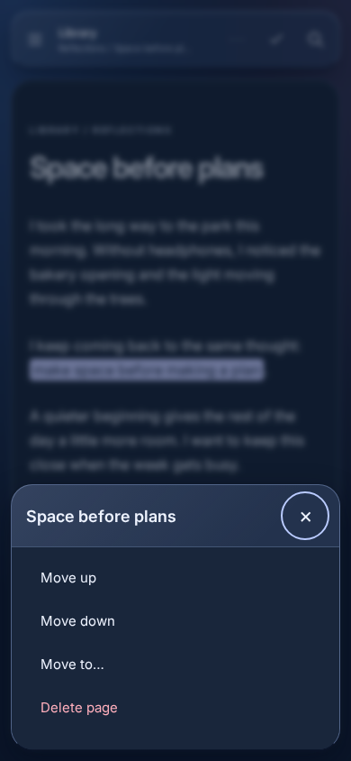
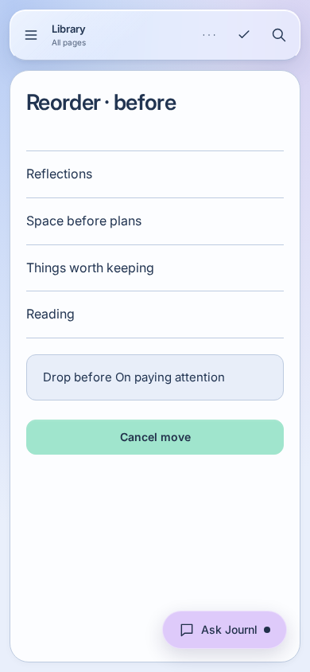
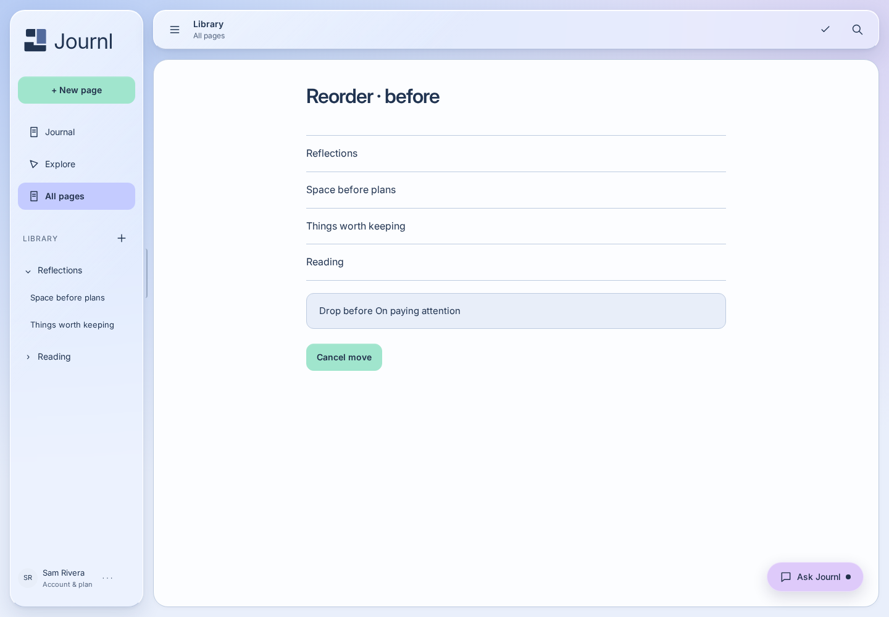
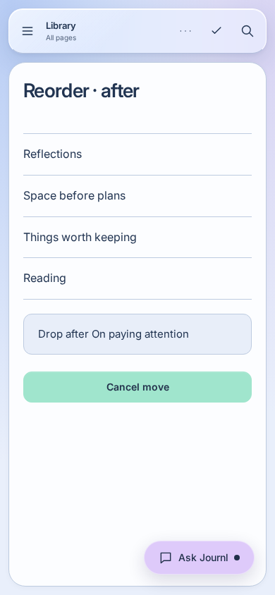
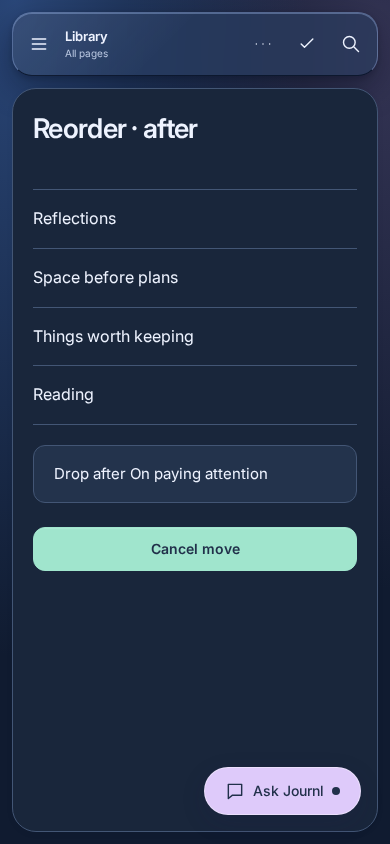
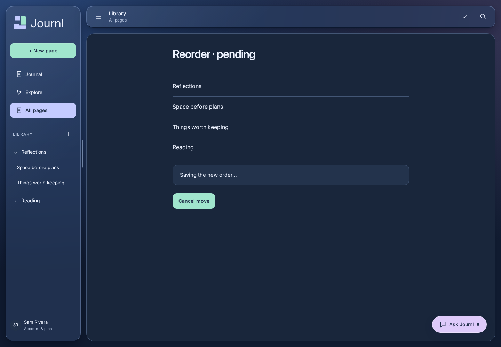
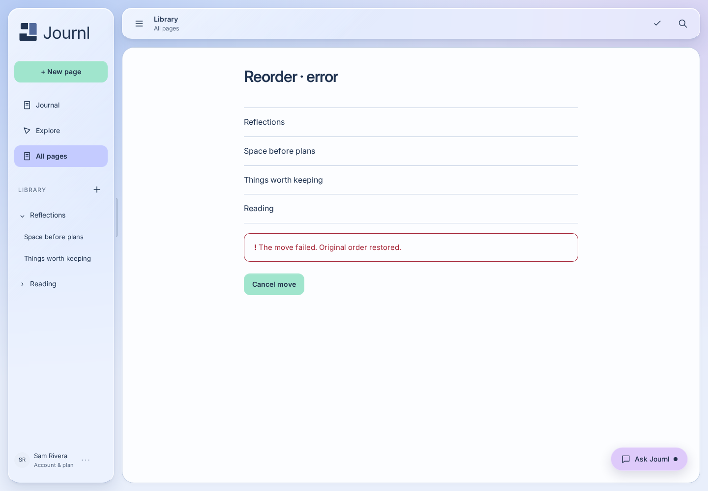

Library
Approved application · approved logoEvery image below is an actual canonical PNG. Open an image for its full resolution. These are authored design scenes, not current-app browser captures.
Folder actions
folder-menuActions and implementation pointers
× · New page · New folder · Move up · Move down · Move to… · Delete folder
apps/web/src/app/(app)/@appSidebar/_components/app-sidebar-pages.tsxapps/web/src/app/(app)/folders/_components/folder-nested-pages-list.tsxapps/web/src/app/(app)/pages/_components/page-editor.tsx


SHA256 a3db3801740951145d74828175f68d06965b8defa60b2cc67d25671c71de80bf


SHA256 da1d85d26c6dfb59184548be5fac2c1e117b86eb22872e0f37b7b893842c78dd

SHA256 6903d04645758e1f34804e491228c814caac614b8e02ba93f14004ad03a3fcaf


SHA256 cddd38753727733167c8f565baa58f984aae8539fd53b3a29d31e6b69c88651e
Page actions
page-menuActions and implementation pointers
× · Move up · Move down · Move to… · Delete page
apps/web/src/app/(app)/@appSidebar/_components/app-sidebar-pages.tsxapps/web/src/app/(app)/folders/_components/folder-nested-pages-list.tsxapps/web/src/app/(app)/pages/_components/page-editor.tsx

SHA256 2c05d3232c36a2a16e8af800916b2768a009790008c9550a520a7fd646187a01

SHA256 d504d8f598ffe4cda90954e31a8c118eacb8eb9352060f75319a24545c82585b

SHA256 6a72d31ca4f9678c89c1078a11f25a4ca7e42c483b86012ffd31afbe7010436f


SHA256 cf7f797b0f0eefe56a336fc4da8f0ff979ea4f2c28bfecd7824a3ad4e838b1b6
Reorder · before
drag-beforeActions and implementation pointers
+ New page · Journal · Explore · All pages · ⌄ · Reflections · › · Reading · Cancel move · Ask Journl · Today’s Journal · Close · Instant · Thinking
apps/web/src/app/(app)/@appSidebar/_components/app-sidebar-pages.tsxapps/web/src/app/(app)/folders/_components/folder-nested-pages-list.tsxapps/web/src/app/(app)/pages/_components/page-editor.tsx


SHA256 5ac647323bbc810177e32a98880207669d1e014f531c93b0ad21e1ba40189e60


SHA256 68c8aed1c15d50307339e8ef75ba3fa45ff5074e3a1b42fb7d537883cdc8810c

SHA256 5b91e1bd29938b08760e593cd80d48ec3c87e29c9286c920b0644e302b3936fa

SHA256 282bd59015fadca6f563ae90f326d61596e708cf963a7a359a2476d71b96f997
Reorder · after
drag-afterActions and implementation pointers
+ New page · Journal · Explore · All pages · ⌄ · Reflections · › · Reading · Cancel move · Ask Journl · Today’s Journal · Close · Instant · Thinking
apps/web/src/app/(app)/@appSidebar/_components/app-sidebar-pages.tsxapps/web/src/app/(app)/folders/_components/folder-nested-pages-list.tsxapps/web/src/app/(app)/pages/_components/page-editor.tsx


SHA256 3fb9c3e8bcb90cccddcb0762bc7c96a5d3b5f4b39128d01e9af6a22de8901424

SHA256 e488a6b907d5020826412393017480b5185f5298d92db38f817269346bf63fe9

SHA256 7edb1612e41fad6e7fbe44504a7afde66fe1f6765d8536453a6c209b009cbf42


SHA256 79d3643f7cae4612abed799088741b84a9244713d2baa8608afd941cbf6bd595
Reorder · inside
drag-insideActions and implementation pointers
+ New page · Journal · Explore · All pages · ⌄ · Reflections · › · Reading · Cancel move · Ask Journl · Today’s Journal · Close · Instant · Thinking
apps/web/src/app/(app)/@appSidebar/_components/app-sidebar-pages.tsxapps/web/src/app/(app)/folders/_components/folder-nested-pages-list.tsxapps/web/src/app/(app)/pages/_components/page-editor.tsx

SHA256 184bf4f0af29e43c870caa12af1834331b8e2f83533dfe185d19969f1a28c20b

SHA256 570ddeb8f084820c5035020675e7940e13d6fb8da95f507074bb2b91ebbb5804

SHA256 52bb57ea84774a54de0b2af21fe57f5b5e2699867dbf96af0bb29392ef46cd34

SHA256 ed8dc794c15750164dd01582e8bb121df1def24f9d4bb3ab361cac28c409a20d
Reorder · invalid
drag-invalidActions and implementation pointers
+ New page · Journal · Explore · All pages · ⌄ · Reflections · › · Reading · Cancel move · Ask Journl · Today’s Journal · Close · Instant · Thinking
apps/web/src/app/(app)/@appSidebar/_components/app-sidebar-pages.tsxapps/web/src/app/(app)/folders/_components/folder-nested-pages-list.tsxapps/web/src/app/(app)/pages/_components/page-editor.tsx

SHA256 cde3e075b85a924422b101563ce7a6d565630fca8322c57956882b2f8468a7c8

SHA256 66370dc03cd1d954f4787dedade0cd9256428d9ff2bf2af2087581d39112cd04

SHA256 8d43b2087ed4a0466d9af91f0fa763998f28e418e37eab68b87fd82c744e0aa8

SHA256 af3a7e02ac2c833e08cbfa049f3457f7d686ca347d5704c53deb9bcf9bbe4ec9
Reorder · cancelled
drag-cancelledActions and implementation pointers
+ New page · Journal · Explore · All pages · ⌄ · Reflections · › · Reading · Cancel move · Ask Journl · Today’s Journal · Close · Instant · Thinking
apps/web/src/app/(app)/@appSidebar/_components/app-sidebar-pages.tsxapps/web/src/app/(app)/folders/_components/folder-nested-pages-list.tsxapps/web/src/app/(app)/pages/_components/page-editor.tsx

SHA256 62d056aa0b128da4a7772cec62aafec9f3c1d5c8604d1c1c5f3936604a430305

SHA256 4e07452c32a23ba6157f22e6c390a30bef8f0d460d4a87fd9e67225a2664b69c

SHA256 2b0e6cd00b130ba90d51f032be521b16a4ab5be4fd969a39f845c9752361c974

SHA256 0bbbcb7d8ac31b71771041762216f01996f72c7d835215f71dcf1b3bc2732d04
Reorder · pending
drag-pendingActions and implementation pointers
+ New page · Journal · Explore · All pages · ⌄ · Reflections · › · Reading · Cancel move · Ask Journl · Today’s Journal · Close · Instant · Thinking
apps/web/src/app/(app)/@appSidebar/_components/app-sidebar-pages.tsxapps/web/src/app/(app)/folders/_components/folder-nested-pages-list.tsxapps/web/src/app/(app)/pages/_components/page-editor.tsx

SHA256 912b491677b0d433c921810b379e0d87e6f7fe760e8738dd98250b8392774ee3

SHA256 4ce511f32a4513c692c8010dd219af1c9c89471322be7acf17303bb88a32cc3f

SHA256 33869a1bf723259fcc289dcc328606a41f36aedc02694fa816efbebb7c2b4594


SHA256 3f66bdfef35972c5d46b9b72d706d5d3ffca95a0d2dea0e3c664ec7951c785fb
Reorder · error
drag-errorActions and implementation pointers
+ New page · Journal · Explore · All pages · ⌄ · Reflections · › · Reading · Cancel move · Ask Journl · Today’s Journal · Close · Instant · Thinking
apps/web/src/app/(app)/@appSidebar/_components/app-sidebar-pages.tsxapps/web/src/app/(app)/folders/_components/folder-nested-pages-list.tsxapps/web/src/app/(app)/pages/_components/page-editor.tsx


SHA256 a883b122f3b672ac04c26d41562d7426af922b5d1ae950dc96c5c8fed529547f

SHA256 d2244578df504d7e7cf2a8b34dfdc9b699e547dca288f60914b2d2323fc6f3eb

SHA256 13e5751449b321990613da16b10c34de4ad6a0a9d5094e4f5fe9f24d79ad6ddc

SHA256 bc95ad25dce72438973705acae329ea79f45d4be55ffb3ddeffcf85d4014d640
Move Space before plans
move-readyActions and implementation pointers
× · Cancel
apps/web/src/app/(app)/@appSidebar/_components/app-sidebar-pages.tsxapps/web/src/app/(app)/folders/_components/folder-nested-pages-list.tsxapps/web/src/app/(app)/pages/_components/page-editor.tsx

SHA256 882e12174472dcffae1a7a35410297619ce6f9ebbd8e97241d6b8dc97c83c0e7

SHA256 804fe92e254d3260db47b694fef082abd90e2f700358704662a9f4e2eac09975

SHA256 157470b9bab5b107be03c6642075ae8f95e10d39e539906a71fb3fa679a58027

SHA256 446e1fdbf7a257a8f166af9f586fe052bcf7add095b8624248ad526e463512d5